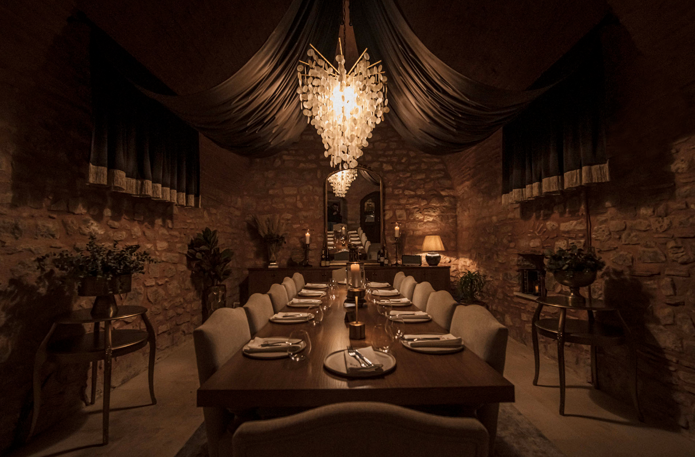

At Zenith Culinary, we offer private rooms perfect for your special events. Whether it's a private celebration, a corporate meeting, or any other exclusive gathering, our carefully curated private rooms provide a unique atmosphere for your needs.
Each of our private rooms is thoughtfully designed to offer comfort, privacy, and tranquility. Our professional team is dedicated to providing you with the best service, ensuring your event is a success.
Customized to your preferences, our private rooms feature special menus crafted to provide a delightful culinary experience. Celebrate your unforgettable moments in Zenith Culinary's private rooms.